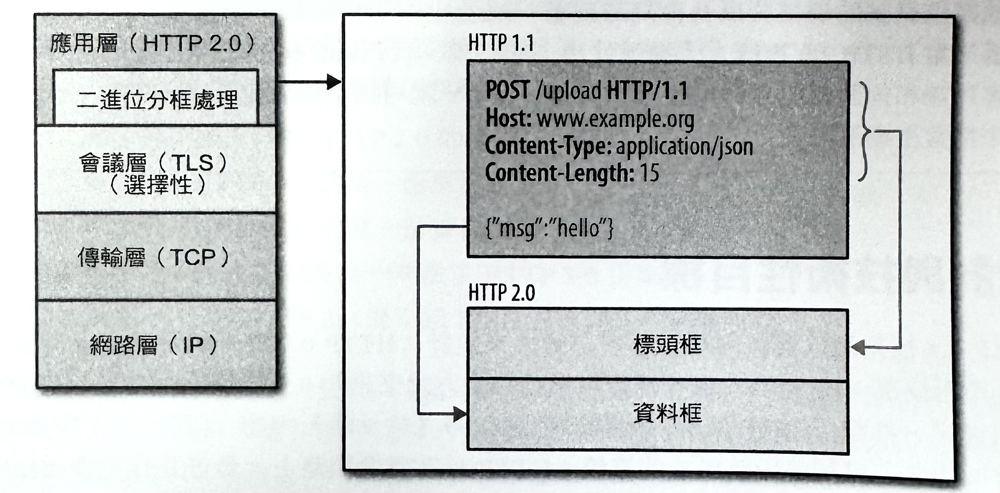
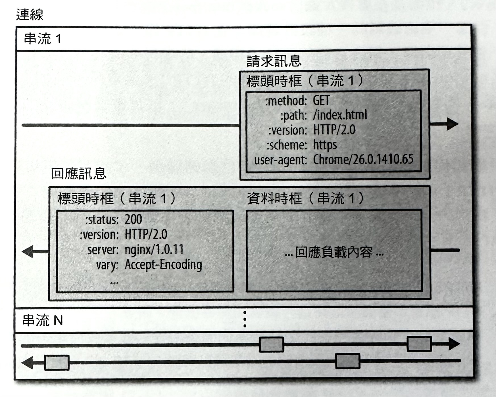
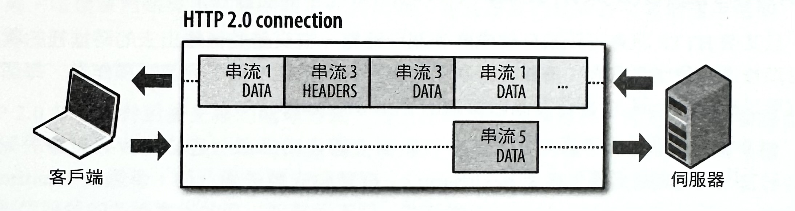
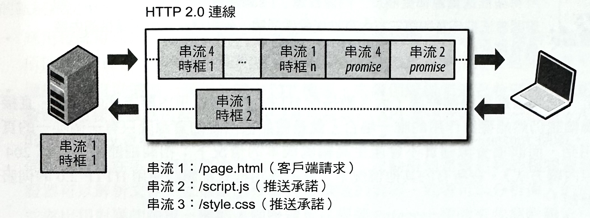
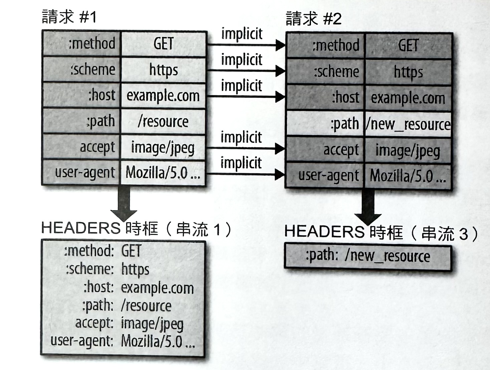
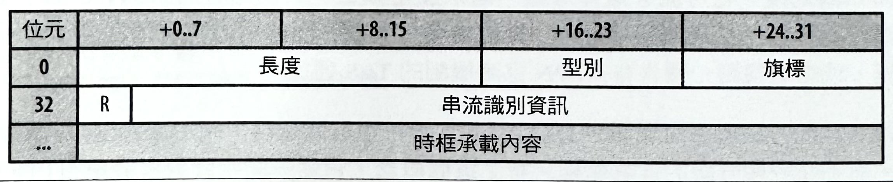
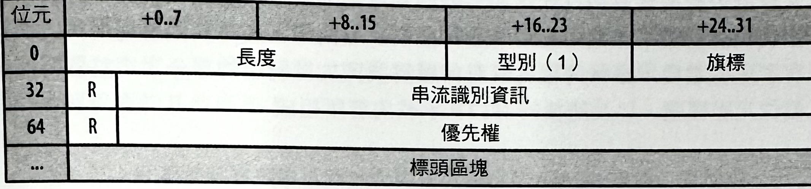
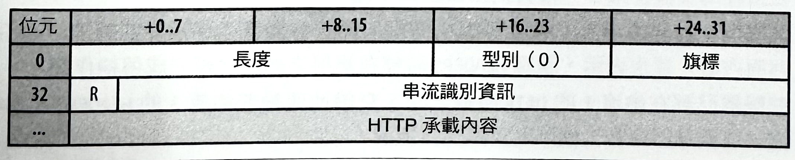
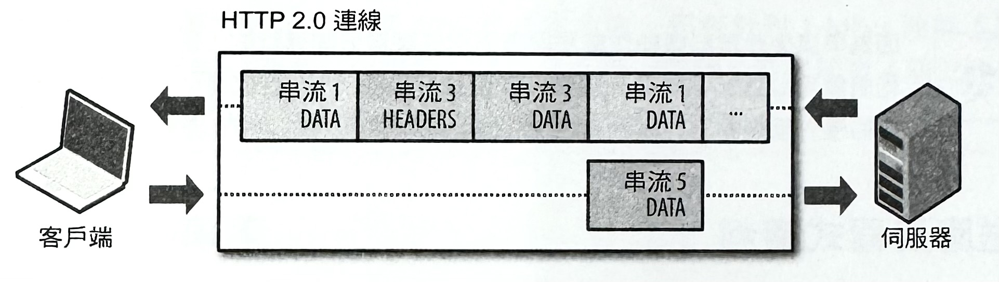

1-18-13 HTTP-2.0
HTTP 2.0 將會讓我們的應用程式變得更快、更簡單，且更耐用——這真是相當罕見的組合啊！而這個新協定讓我們可以免除掉之前在應用程式裡頭，對 HTTP 1.1 所進行的許多處理方法，並且在傳輸層本身裡頭處理這些問題。更好的是，它還對整個主機開啟了可以對應用程式進行最佳化，以提升效能的嶄新機會！
HTTP 2.0 的主要目標，是藉由啟用完整請求和回應的多工處理機制來減少傳輸延遲，並透過有效壓縮 HTTP 標頭欄位的方式來將協定成本降到最低，甚至還增加了對請求優先權調整機制（prioritization），和伺服器推送（server push）等支援能力。為了實現這些要求，就得引進新的流量控制、錯誤控管，以及升級機制之類的許多其他協定強化功能的支援能力，而這些都是每個網頁開發者應該要瞭解，進而運用在他自己的應用程式裡頭的重要功能特性。
HTTP 2.0 並不會以任何方式去修改 HTTP 的應用程式語義，並且會保有 HTTP 方法、狀態代碼、URIs，和標頭欄位等等的所有核心概念。不過，HTTP 2.0 會修改的資料格式化（構成）方式，以及負責管理整個處理程序的客戶端和伺服器之間的傳輸方式，並且會把所有的複雜度從你的應用程式當中，隱藏到新的「分框處理層」（framing layer）裡頭。最後，所有現有的應用程式都可以在不需要進行任何修改的情況下，被進行傳輸處理。這真是太棒了！
不過，我們並不只對傳送某個運作中的應用程式有興趣；我們的目標是要提供最佳的整體效能！HTTP 2.0 讓我們的應用程式，可以去啟用之前所無法運用的許多新的最佳化方式，而我們的工作就是要去善用它們。讓我們更進一步地來瞭解以下的運作方式吧！
HTTP 2.0 目前（2014）正在積極地建立當中：核心架構化設計、原則，以及功能特性的部分都已經很明確，但是同樣的東西在低階的實作細節上，卻還無法說得很具體。基於這個理由，我們的討論將會放在系統架構和它的含意上，並摘要性地檢視一下連接的格式部分—差不多就足夠瞭解該協定的運作方式和它的含意的程度而已。
對於 HTTP 2.0 標準的最新草案和狀態，請前往 IETF 追蹤網站（ http://tools.ietf.org/html/draft-ietf-httpbis-http2 ）。
歷史與 SPDY 的關係
SPDY 是由 Google 所發展，並且在 2009 年中所公布的一項實驗性的協定，而它的主要目的，是要試圖透過解決 HTTP/1.1 的某些效能限制的方式，來減少網頁的下載延遲時間。更具體地來說，概要的專案目標是被設定為底下這些：
- 目標鎖定要讓頁面載入時間（PLT）減少 50%。
- 避免要求網站作者去對內容進行任何的更動。
- 將部署複雜度降到最低，以避免在網路基礎建設裡頭有任何更動。
- 與開放源碼社群一起合作發展新的協定。
- 收集真正的效能資料來驗證（或廢除無效的）實驗性協定。
為了達到 50% 的 PLT 改善，SPDY 致力於讓底下的 TCP 連線使用情況變得更有效率，而引進了一種新的「二進位分框處理層」的方式，來啟用請求和回應的多工機制，並進行優先權安排作業，以及把非必要網路延遲狀況降到最低並消除；相關細節請參考《延遲成為效能瓶頸的情況》一節。
才剛公布不久，Google 的兩位軟體工程師 Mike Belshe 和 Roberto Peon 分享了他們對最新 SPDY 協定的實驗性實作品的最初成果、文件和原始碼：
截至目前為止，我們只有在實驗室環境當中測試過 SPDY。初步結果是非常令人振奮的：當我們透過模擬家庭網路連線來下載前 25 名的網站時，我們在效能方面看到有很明顯的改善效果—頁面下載速度提升了 55%。
—A 2x Faster Web（Chromium 的部落格網站）
時間快速地推進到 2012 年，新的實驗性協定在 Chrome、Firefox、和 Opera 當中，都有支援，而且許多大型網站目標（如 Google、Twitter、Facebook）都會提供 SPDY 協定給相容的客戶端。換句話說，SPDY 證明可提供極大的效能，並且朝著以提升產業採用情況來逐漸成為一項非官方標準的方向發展。結果，HTTP 工作小組（HTTP-WG）在 2012 年初，捨棄了對新的 HTTP 2.0 的努力，並轉向把 SPDY 變成官方標準。
邁向 HTTP 2.0 之路
SPDY 是 HTTP 2.0 的催化劑，但 SPDY 卻不是 HTTP 2.0。在 2012 年初有進行過一次 HTTP 2.0 提案的公開徵選，並在 HTTP-WG 內部後續經過許多討論之後，SPDY 規格被採納為標準的未來發展工作上的一個起點。從那時候開始，已經過多次的改變與改進，並且將會持續來打造出官方的 HTTP 2.0 標準。
然而，在我們繼續超前之前，值得先來檢閱一下 HTTP 2.0 的起草章程部分，因為那裡頭有特別強調出協定的範圍和關鍵設計標準，預期 HTTP/2.0 將：
- 在大多數情況下，透過 HTTP 1.1 使用 TCP 的方式，來實質且適當地改善終端使用者可感受到的延遲狀況。
- 解決 HTTP「線頭阻塞」（head-of-line blocking）的問題。
- 不需要對伺服器以多個連線來啟動並行機制，進而改善 TCP 的使用情況，尤其是與擁塞控制有關的處理上。
- 保留 HTTP 1.1 的語義，並善用現有的文件，包括（但不限於）HTTP 方法、狀態代碼、URI 以及適當的標頭欄位。
- 清楚地定義好 HTTP 2.0 與 HTTP 1.x 的互動方式，尤其是在中介裝置部分。
- 清楚地識別出任何新的可擴充之處，以及它們的適當使用方針。
最後完成的規格被預期要符合這些針對 HTTP 的常見現有部署情況的目標；尤其是有關網頁瀏覽作業（包括桌上型和行動裝置）、非瀏覽器（HTTP APIs）、網頁服務機制（各種不同規模），以及中介處理程序（由代理伺服器、企業防火牆，「反向」代理伺服器，以及內容傳輸網路所管理）的部分。同樣地，目前和未來對 HTTP/1.x 的語義擴充部分（例如，標頭、方法、狀態代碼與快取指令等等），應該要在新的協定裡頭也提供相同的支援能力。—HTTPbis WG 章程 HTTP 2.0
總之，HTTP 2.0 的目的是要解決之前標準的主要效能限制，但它會擴充，而不是取代之前的 1.x 標準。HTTP 的應用程式語義是一樣的，而且所提供的功能性，或者是 HTTP 方法、狀態代碼、URI，以及標頭欄位之類的核心概念，都不會做任何改變；這些改變情況的細節說明內容已超出本書範圍。有了那樣的想法，就令人不禁想問「『2.0』真的就會有保障嗎？」
主要版本修訂增加到 2.0 的原因，是因為在客戶端和伺服器之間的資料交換方式上有所改變。為了達到概述的效能目標，HTTP 2.0 增加了一個新的「二進位分框處理層」（binary framing layer），而這部分與先前 HTTP 1.x 的伺服器和客戶端並不相容。因此，版本編號就修訂為「2.0」。
除非你正在實作一個搭配原始 TCP 套接介面（socket）來進行處理的網頁伺服器，或一個客製化的客戶端，否則你可能不會非常注意到在 HTTP 2.0 裡頭的實際技術上的任何改變：所有最新的低階分框處理（framing）都是由瀏覽器和伺服器來幫你執行的。或許，唯一的差別可能是類似伺服器所推動的，最新，並且是選擇性的 API 能力的可用性！
最後，得要好好地來討論一下 HTTP 2.0 的發展時程。發展以所有網頁通訊方式為基礎的一套協定的主要修訂版，是一件很重要的任務，而且需要經過許多的慎密思考、實驗，和協調過程。因此，隨便預測 HTTP 2.0 的發展時程，是相當危險的事情：當一切準備就緒，事情自然就會上軌道了。也就是說，HTTP-WG 正在照著計畫進行著，而目前官方的重要里程碑則規劃如下：
- 2012 年 3 月：徵求針對 HTTP 2.0 的提案。
- 2012 年 9 月：HTTP 2.0 的第一份草案。
- 2013 年 7 月：HTTP 2.0 的第一份實作草案。
- 2014 年 4 月：工作團隊最後一次徵求 HTTP 2.0 提案。
- 2014 年 11 月：將 HTTP 2.0 提交給 IESG 來作為一份建議標準。
在 2012 至 2014 年之間的最大缺口，是計畫中要進行的一堆編輯性和實驗性工作。根據發展過程，以及來自許多實作者和產業的回饋情況，相關的時間表將會隨需要來進行調整。所幸，截至 2013 年為止，時間表似乎都還蠻順利的！
HTTP 2.0 與 SPDY 的共同演進
在 2012 年的夏天，HTTP 工作小組採用了 SPDY v2 草案，來當作 HTTP 2.0 標準的出發點。然而，SPDY 的發展工作並沒有因此而停止。也就是說，SPDY 以並行方式繼續共同發展著：
- SPDY v3 在 2012 年被釋出，而在這個版本含有更新過的分框處理格式（framing format），以及流量控制（flow control）的第一個實作成果。
- SPDY v4 將在 2013～2014 年之間釋出，而在這個版本會再一次地更新分框處理格式、改善優先權調整機制（prioritization），以及流量控制和伺服器推送（server push）實作功能。
SPDY 會持續發展的動機很簡單：它是搭載著各種 HTTP 2.0 的全新功能和提案的試驗性媒介。在規劃上原本看起來還不錯的東西，有可能實際上是無法運作的，或者相反地，原本不被看好的設計，可能在實際上會發揮很大的成效也不一定，而 SPDY 剛好就提供了每個提案在被引進 HTTP 2.0 標準之前，有個能夠進行測試和評估的方式。
這種漸進式的發展過程，以及 SPDY 和 HTTP 2.0 共同演進的方式，造成實作者得進行許多的處理工作，但實際上，它卻也提供了不少的好處：更穩固並更廣泛地經過測試的規格，以及會同時跟著一起進化的客戶端和伺服器實作成果。事實上，當 HTTP 2.0 被標上「準備就緒」的時候，我們就會擁有已充分測試過的熱門客戶端和伺服器的實作成果了！屆時，SPDY 就可以功成身退，而 HTTP 2.0 就可來接管主場優勢了！
設計與技術性目標
HTTP 1.x 被刻意以實作簡單性為核心概念來設計：HTTP 0.9 是一個可連結至全球資訊網的單行協定；HTTP 1.0 以一種資訊化標準的方式來證明 0.9 的普及延伸性；HTTP 1.1 則引進了一種官方 IETF 標準；相關細節請參考《HTTP 發展史 1-18-11 》內容。因此，HTTP 0.9~1.x 確實地傳達了每個階段該完成的事情：HTTP 只是網際網路上，最普及且被廣泛採用的應用協定之一。
然而，「實作簡單性」也變成是應用程式效能的一種成本，而這是 HTTP 2.0 被設計要來填補的確實缺口：
HTTP/2.0 封裝方式透過允許在相同連線上進行標頭欄位壓縮處理，以及多個並行訊息的方式，來讓網路資源能被更有效地運用，並降低延遲的感覺。它還引進了能讓表達資訊從伺服器往客戶端主動推送的機制。
—HTTP/2.0 草案 4
HTTP 2.0 是個還在發展中的標準。這意味著，每個時框裡的位元編碼方式、個別欄位的名稱、以及類似低階細節的部分，都可能會有所變動。然而，雖然在處理方式上還是會繼續演進，但是在我們的討論內容裡，最關切的還是在核心設計和技術性的目標上；這些是大家所能理解並達成的共識。
二進位分框處理層（Binary Framing Layer）
在 HTTP 2.0 的所有效能强化部分的核心，就是最新的二進位分框處理層（Binary Framing Layer）（請參考圖-1），而它將會負責管理 HTTP 訊息的封裝方式，以及訊息在客戶端和伺服器端之間的傳輸方式。
圖-1 ：二進位分框處理層

這個層（layer），指的是在套接介面（socket interface）與要給應用程式用的更高 HTTP API 之間，引進一項新機制的一種設計選擇：在 HTTP 裡，如動詞、方法和標頭之類的語意，都不會受到影響，但在它們的傳輸過程裡，將進行的編碼方式就會有所差異。與採用新行（newline）字元來劃分純文字內容的 HTTP/1.x 協定所不同的是，所有 HTTP/2 通訊內容，都會被分割成更小的訊息（message），以及會被編碼成二進位格式的個別時框（frame）。
因此，客戶端和伺服器都必須使用新的二進位編碼機制，才能互相理解對方的訊息內容：一個 HTTP/1.x 客戶端沒辦法與只會用 HTTP/2 標準的伺服器進行溝通，反之亦然。幸好，我們的應用程式都不需要知道這裡頭的任何變動，因為客戶端和伺服器都會幫我們去執行所有必要的分框處理工作。
HTTPS 是二進位分框處理機制在實際運用上的另一個不錯的範例：所有 HTTP 訊息都會透明地被進行編碼和解碼處理（請參考《TLS 記錄協定》），如此即可在不需要對我們的應用程式進行任何修改的情況下，開啟客戶端和伺服器之間的安全通訊管道。HTTP/2 也是以類似的方式來運作的。
串流、訊息與時框
新的二進位分框處理機制的採用，改變了資料在客戶端和伺服器之間的交換方式（如圖-2）。為了解釋這項處理過程，我們必須先介紹幾個新的 HTTP/2 術語：
串流（Stream）
在一個已建立連線中的一種位元組雙向流量。
訊息（Message）
會對應到一個邏輯訊息的一種完整的時框序列。
時框（Frame）
在 HTTP/2 裡頭的最小通訊單位，而其中每個單位都會存放著一個可用來識別出該時框所屬串流的時框標頭（frame header）。
所有的 HTTP/2 通訊作業，都是在一個可攜帶任何數量的雙向串流的連線裡頭進行的。其中，每個「串流」都是以一或多個「時框」所組成的「訊息」來進行通訊。接著，在通訊過程中的每個「時框」，有可能是呈現相互交錯的情況，而且會透過被內嵌在每個個別時框標頭裡的串流識別資訊（stream identifier），來進行重新組合處理。
圖-2 ：HTTP 2.0 的串流、訊息與時框
所有的 HTTP 2.0 時框都會使用二進位編碼機制，而標頭資料則會被進行壓縮處理。因此，上圖所描述的是串流、訊息，和時框之間的關係，而不是它們在網路連線上的實際編碼作業—若要先瞭解這部份的說明，可以先跳到《簡介二進位分框處理機制》。
那幾個簡要的句子裡頭，就包含了許多資訊。讓我們再次地來回顧一下。「串流」、「訊息」，和「時框」等術語，是瞭解 HTTP 2.0 的必要知識：
- 所有的通訊作業都是以一個單一 TCP 連線來執行處理的。
- 「串流」是在一個帶有雙向訊息的連線裡頭的一種虛擬頻道（virtual channel）。每個串流都擁有一個獨特的整數識別資訊（1，2，...，N）。
- 「訊息」是由一或多個「時框」所組成的一種邏輯性的 HTTP 訊息，例如：「請求」或「回應」皆是。
- 「時框」是會攜帶著資料的特定型別的通訊作業的最小單位，像是 HTTP 標頭、負載內容，以及各種其他型別。
總之，HTTP 2.0 將 HTTP 協定通訊方式，分解較小的個別「時框」，而把「訊息」給映射到一個邏輯化「串流」裡頭。換句話說，許多「串流」都可以在一個單一 TCP 連線當中，以並行方式來進行資料的交換作業。
請求和回應的多工機制
在 HTTP 1.x 當中，假如客戶端想要透過多個並行請求來提高效能的話，那麼就必須使用到多個 TCP 連線；詳情請參閱《使用多個 TCP 連線》。這種行為反應是 HTTP 1.x 保證在每個連線當中，每一次就只會傳輸一個回應（回應佇列機制）的這種傳輸模型，所呈現出來的一種直接結果。然而，這會造成「線頭阻塞」，以及底層 TCP 連線的無效使用情況。
在 HTTP 2.0 裡的新的二進位分框層免除了這些限制，並啟用完整的請求和回應多工機制（multiplexing），來讓客戶端或伺服器能夠把一個 HTTP 訊息打散成多個獨立時框（請參考圖-3），並交錯地進行傳輸，然後再由另一端把它們給重新組合起來。
圖-3 ： 在一個共用連線裡頭的 HTTP 2.0 請求和回應多工機制
圖-3 所擷取到的，是在相同連線裡頭正在傳送多個串流時的瞬間狀況：客戶端正把一個 DATA 時框（串流 5）傳送給伺服器，而伺服器同時也正在把含有串流 1 和串流 3 的一個交錯的時框序列，發送給客戶端。結果，就可以看到當下有三個並行請求/回應正在進行交換傳輸作業！
將一個 HTTP 訊息分解成多個獨立時框，並將它們交錯處理，然後在另一端進行重組的能力，是 HTTP 2.0 的一個最重要的強化部分。事實上，它會在所有網頁技術的整個堆疊上，帶來無數效能優勢上的連鎖效應，而讓我們可以去進行以下這些處理：
- 在不阻塞任何一個請求的情況下，並行地交錯多個請求。
- 在不阻塞任何一個請求的情況下，並行地交錯多個回應。
- 使用一個單一連線來並行地傳輸多個請求和回應。
- 透過刪除非必要延遲的方式，來達到較低的網頁下載時間。
- 從我們的應用程式代碼當中，刪除不必要的 HTTP 1.x 處理作業。
- 以及更多的其他處理作業。
在 HTTP 2.0 中，新的二進位分框處理層會解決在 HTTP 1.1 裡頭所遭遇的「線頭阻斷」問題，並且能消除掉為了啟動並行處理來進行請求和回應的傳輸作業，而需要用到的多個連線。最後，這樣會讓我們的應用程式變得更快、更簡單，以及更便於部署成本。
針對請求和回應多工機制的支援能力，讓我們可能去消減掉許多像是串聯檔案、動態圖片機制，以及網域碎片化之類的 HTTP 1.x 的處理作業；請參考《HTTP 1.X 的最佳化處理》。同樣地，藉由降低必要的 TCP 連線數的方式，HTTP 2.0 還可以同時降低客戶端和伺服器兩端的 CPU 和記憶體成本。
請求的優先權安排作業（Request Prioritization）
一旦某個 HTTP 訊息可以被分解成許多個別時框，被交錯並傳輸出去的時框裡的次序就可以被進行最佳化處理，進而改善我們的應用程式效能。為了促進這項作業，每個串流都可以被指派一個 31 個位元長的優先值（priority value）：
- 0 代表最高優先串流。
- 2³¹−1 代表最低優先串流。
有了優先權之後，客戶端和伺服器就可以套用不同策略，來以最佳次序去處理個別的串流、訊息，和時框：伺服器可以藉由控制資源（CPU、記憶體，和頻寬）配置情況的方式，來依序進行串流處理作業，而且一旦有回應資料可用，就會安排高優先權的時框來把它傳輸至客戶端。
瀏覽器請求優先權安排作業與 HTTP 2.0
並非所有資源在瀏覽器進行頁面渲染處理時，都擁有相同的優先權：HTML 文件本身是用來建立起 DOM 的主要資源；CSS 是建立 CSSOM 時所不可或缺的；而 DOM 和 CSSOM 建構作業都可能會被 JavaScript 資源所阻塞（請參考《DOM、CSSOM 和 JavaScript》）；而圖片之類的其餘資源則通常都是以較低的優先權來進行讀取處理的。
為了加速頁面的下載時間，所有的最新瀏覽器都會根據素材的類型、它在頁面上的位置，甚至從之前的造訪情況所學到的優先權，來對請求進行優先權安排作業。例如，假設渲染作業在上次造訪時，某個特定素材發生過阻塞狀況，那麼相同的素材可能就會在未來被安排擁有較高的優先權。
搭配 HTTP 1.x，瀏覽器擁有可利用上述優先權資料的有限能力：由於該協定不支援多工機制，因此就沒有辦法對伺服器進行請求優先權的通訊作業。取而代之的方法是，它必須仰賴並行連線的使用，而讓有限的並行機制達到每個原點可高達 6 個連線的處理方式。最後，請求就會被佇列在客戶端上，直到有連線可用為止——不過，那會增加非必要的網路延遲。理論上，《HTTP 管線處理機制（HTTP Pipelining）》曾試圖局部解決這個問題，但實際上，卻未能提升大量採用的情況。
HTTP 2.0 解決所有的這些無效率狀況：瀏覽器可以在資源被發現的時候，就立刻派送每個請求，並指定每個串流的優先權，然後讓伺服器判斷出最佳的回應傳輸作業。這樣會消除掉不必要的請求佇列延遲，並且讓我們能夠最有效地運用每個連線。
HTTP 2.0 並沒有針對優先權的處理方式，指定任何特定的演算法，而是指出，要提供能讓優先權資料可以在客戶端和伺服器之間進行交換作業的機制。因此，「優先權」（priorities）是提示，而「優先權安排策略」（prioritization strategy）則可能會因為客戶端和伺服器的各種實作狀況，而有所不同：客戶端應該提供適當的優先權資料，而伺服器則應該根據被指明的串流優先權來修改它的處理和傳輸作業。
最後，雖然你可能無法控制來自客戶端所發送的優先權資料的品質，但是你有機會去選擇要用的伺服器；請慎選你的 HTTP 2.0 伺服器！為了說明這個重點，讓我們來思考底下這些問題：
- 要是伺服器忽略掉所有的優先權資訊的話，會發生什麼情況？
- 較高優先權的串流是否應該永遠都保持領先情況？
- 是否有不同的優先權串流應該要被交錯處理的情況呢？
假如伺服器忽略掉所有的優先權資訊的話，那它可能會無意中減緩應用程式的執行效能——比如說，發送了圖片請求，卻因為要等待重要的 CSS 和 JavaScript，以致於阻擋了瀏覽器的渲染作業。然而，採用某種嚴謹的優先權排序方式，也可能會因此重新引來線頭阻塞問題，而導致較不理想的情況——比如說，一個單一緩慢請求難免就會阻礙到其他資源的傳輸作業。
來自多個優先權等級的時框可以，而且也應該由伺服器來進行交錯處理。讓高優先權串流應該可以在客戶端與伺服器之間的處理階段，以及頻寬配置作業期間，盡可能地被優先處理。然而，為了讓底層連線能被充分利用，就得對優先權等級進行混合使用。
對每個原點使用一個連線
有了新的二進位分框處理機制後，HTTP/2 就不再需要以多個 TCP 連線來並行地進行多工串流處理了；每個串流都會被分解成許多可以被進行交錯傳輸與優先權安排處理的時框。最後，所有的 HTTP/2 連線都會是屬於持續性的，而且在客戶端和伺服器之間應該只會有一個唯一的連線。
經過實驗室的測量，我們已經看到，透過使用更少來自於客戶端連線的方式，會有一致的延遲好處。透過 HTTP/2 來發送的整體封包數量，可以比使用 HTTP 的方式還要低 40% 左右。在伺服器上處理大量的同時連線狀況，也確實會變成是一個可伸縮性（scalability）的問題，而 HTTP/2 則會減少這項負擔。—HTTP/2 草案 2
「對每個原點使用一個連線」顯然會減少相關的成本負擔—因為以更少的套接（socket）來管理連線路徑，就會留下較小的記憶體軌跡，並達成最佳的連線吞吐量。此外，在網路堆疊的所有層級上還會有許多好處：
- 在所有串流之間擁有一致性的優先權安排機制。
- 透過使用單一壓縮脈絡的方式來獲得更好的壓縮情況。
- 由於使用到較少的 TCP 連線，而使得改進了在網路阻塞上的影響。
- 減少在緩步啟動和更快擁塞與損害復原的時間。
大多數的 HTTP 傳輸都是簡短且突發性的，而 TCP 是針對長時間連線的大量資料傳輸情況來進行最佳化處理的。透過在所有串流之間，重複使用相同連線的方式，HTTP/2 就能夠更有效地去運用 TCP 連線。
轉移到 HTTP/2，不只會降低網路延遲，而且還有助於改善吞吐量，並降低處理作業成本！
封包遺失、高 RTT 連結，以及 HTTP 2.0 效能
雖然剛剛列出了對每個原點使用一個 TCP 連線的好處，但是，你可能會想問：「這樣是否會有什麼潛在缺點嗎？」。毫無疑問地，當然有！
- 我們雖然已經消除了來自 HTTP 的線頭阻塞問題，但是在 TCP 層裡頭仍然會有線頭阻塞狀況（請參考《線頭阻塞（Head-of-Line Blocking）》）。
- 假如 TCP 視窗縮放機制被取消的話，頻寬延遲產生的效應可能會限制連線吞吐量。
- 當發生封包遺失狀況時，TCP 擁塞視窗大小就會被降低（請參考《擁塞迴避（Congestion Avoidance）》），因而降低整個連線的最大吞吐量。
在這份列表裡的每一項，可能會對 HTTP 2.0 連線的吞吐量和延遲效能都有不良的影響。然而，儘管會有這些限制，但根據實驗證據顯示，使用單一 TCP 連線的方式仍然是 HTTP 2.0 的最佳部署策略：
根據截至目前為止的測試顯示，線頭阻塞的負面效應（尤其是出現封包遺失狀況下）會比壓縮和優先權安排機制的好處還要來得重要。—HTTP/2.0 草案 2
就像搭配所有效能最佳化處理程序那樣，在你移除一個效能瓶頸的時候，你就會再遭遇到下一個新的瓶頸。在 HTTP 2.0 的場合當中，TCP 可能也是如此。同樣地，這就是為何伺服器上的一個被精心調整過的 TCP 堆疊，對 HTTP 2.0 來說會是這麼樣重要的一個最佳化標準的原因。
目前有些針對解決這些顧慮，以改善大多數 TCP 效能的研究正在進行著：TCP 快啟機制（TCP Fast Open）、速率比例縮減（Proportional Rate Reduction），以及增加初始擁塞視窗等等。話雖如此，但有一個你必須體認到的重點是，HTTP 2.0 就和它的前輩一樣，並沒有強迫一定得用 TCP 來實現。其他像 UDP 之類的傳輸方式，也是屬於可能運用的範圍。
流量控制（Flow Control）
透過同一個 TCP 連線來進行多個串流的多工處理方式，會帶來共用頻寬資源的競爭情況。串流優先權可以協助決定傳輸作業的相對次序，但是單純只有優先權的話，並不足以用來控制在串流或多個連線之間的資源配置作業的執行方式。為了解決這個問題，HTTP 2.0 對串流與連線的流量控制方面，提供了一種簡單機制：
- 「流量控制」採取的是「逐點跳躍」（hop-by-hop）的間接漸進方式，而不是「終端到終端」（end-to-end）的那種直接連線方式。
- 「流量控制」是根據「視窗更新時框」（window update frame）而定：接收者會針對整個連線，發送出它準備在串流上所能接收的位元組數量的通知訊息。
- 「流量控制」視窗大小是由 WINDOW_UPDATE 時框來進行更新的，以便指定串流 ID 和視窗大小的增量值。
- 「流量控制」是有方向性的：接收者可以選擇它對每個串流，以及整個連線所期望設定的任何視窗大小。
- 「流量控制」可以由接收者針對個別串流或整個連線，來取消它的啟用狀態。
當 HTTP 2.0 連線被建立起來的時候，客戶端和伺服器會進行「SETTINGS」（設定資訊）時框的交換作業，以便同時設定好兩個方向的流量控制視窗大小。此外，其中任何一端也可以隨意地取消在某個個別串流，或整個連線的流量控制機制。
上述列表是否讓你回想起之前談過的 TCP 流量控制呢？答案顯然是肯定的；這些機制實際上是完全相同的——相關細節請參考《流量控制》。然而，由於 TCP 流量控制機制本身，無法在單一 HTTP 2.0 連線裡頭的許多串流當中，有效地做出區分。因此，HTTP 2.0 流量控制機制就有其存在的必要性。
HTTP 2.0 標準並沒有指定任何特定的演算法、數值，或者 WINDOW_UPDATE 時框應該要被發送的時機點：實作者可以選用自己專屬的演算法，以符合它們自己的使用情況，而達到最佳效能。
除了可用來決定傳輸的相對次序的優先權以外，流量控制可以調節在一個 HTTP 2.0 連線裡的每個串流所要消耗的資源量：接收者可以在特定串流上發佈
伺服器推送機制（Server Push）
HTTP 2.0 的一個強大新功能，就是伺服器具備可針對一個單一客戶端請求，來發送出多個回應的能力。那表示，除了對最初的請求做出回應以外，伺服器可以在客戶端無須詳細地一一提出請求的情況下，主動將額外資源推送（push）給客戶端（如圖-4）。
圖-4 ：伺服器為推送資源啟動新的串流（promise）
當 HTTP 2.0 連線被建立起來的時候，客戶端和伺服器會進行「SETTINGS」（設定資訊）時框的交換作業，以限制在兩個方向當中的同時串流的最大數量。如此，客戶端就能夠限制可被推送的串流數量，或者透過把這個值設定為 0 的方式，來整個取消伺服器的推送功能。
為什麼我們會需要這樣的機制？一個典型的網頁應用程式會由幾十個資源組成，而其中的所有資源都是客戶端針對伺服器所提供的文件，進行審查處理而發現到的。因此，何不藉由讓伺服器事先把相關資源主動推送給客戶端的方式，來消除掉多餘的延遲時間呢？伺服器已經知道客戶端將會需要用到的資源；讓伺服器主動推送即可。事實上，假如你曾經透過某個資料 URI，來內聯過一個 CSS、JavaScript，或是任何其他素材的話（請參考《資源內聯方式》），那麼你就已經擁有使用過伺服器推送作業的實務經驗了！
透過手動將資源內聯到文件裡頭的方式，我們實際上就是在主動地把那個資源給推送給客戶端，而不需要等待客戶端去請求相關的必要資源。搭配 HTTP 2.0 來使用的唯一差異在於，我們現在可以把這項工作流程，從應用程式當中給搬移到 HTTP 協定本身當中，以便提供底下的這些重要好處：
- 被推送資源可以由客戶端進行快取處理。
- 被推送資源可以被客戶端加以拒絕。
- 被推送資源可以在不同頁面當中重複使用。
- 被推送資源可以由伺服器來進行優先權安排處理。
所有被推送資源都受制於「同源政策」（same-origin policy）。因此，伺服器無法把任意的第三方內容推送給客戶端；伺服器必須對所提供的內容具有權威性。
實際上，伺服器推送機制解決了大多數搭配 HTTP 1.x 來使用內聯方式的情況。直接資源內聯機制仍然能發揮作用的唯一場合，就是假如被內聯的資源就只有一個唯一的頁面需要用到，而該項資源確實不會產生高編碼成本的情況下；相關細節請參考《資源內聯方式》。在所有的其他情況下，你的應用程式都應該使用 HTTP 2.0 的伺服器推送機制！
PUSH_PROMISE
所有伺服器推送串流都是透過
PUSH_PROMISE
時框來啟動的，而這個時框是用來表示該伺服器有意要把已描述資源推送給客戶端，並且會對原始請求做出回應。
PUSH_PROMISE
時框就只會包含已承諾資源的 HTTP 標頭資訊。當客戶端收到一個
PUSH_PROMISE
時框的時候，它可以根據需要來選擇拒絕（例如，該項資源已經存在於快取當中），而這是在 HTTP
1.x 之上的一個重要改進。在 HTTP 1.x
裡的一個最熱門的最佳化方式——「資源內聯機制」（resource
inlining）其實就等同於一種「強迫推送機制」（forced
push）：客戶端無法將它取消，而且也不能單獨地對內聯資源進行快取處理。
最後，在伺服器推送機制上有幾個限制：首先，伺服器必須遵守「請求-回應」循環，因此只會把回應裡的資源推送給某個請求；伺服器無法任意地啟動伺服器推送機制。其次，
PUSH_PROMISE
時框必須在傳回回應之前就先被發送出去，以避免和客戶端之間發生競爭狀況——例如，客戶端正在請求伺服器即將推送給它的同一資源，就會發生競爭狀況。
HTTP 2.0 伺服器推送機制的實作方式
伺服器推送機制對於應用程式的最佳化傳輸作業，開啟了許多新的可能性。然而，伺服器要如何決定哪些資源可以，或者應該被進行推送處理呢？就像搭配優先權安排機制那樣，HTTP 2.0 標準沒有指定特定的演算法，並且將決定權留給實作者自行判斷。因此，就有許多可能策略可以選用，而且其中的每一種都可以針對應用程式，或是所選用伺服器的脈絡狀況來進行調整：
- 應用程式可以在它的應用程式代碼當中，明確地啟動伺服器推送機制。這需要與所使用的 HTTP 2.0 伺服器緊密結合，但是會把完整的控制權提供給開發者。
-
應用程式可以透過一個額外的 HTTP
標頭，來讓伺服器知道它希望被推送的相關資源。這樣會讓應用程式從 HTTP 2.0 伺服器的 API
當中分離出來，例如，Apache 的 mod_spdy 會尋找用來列出要被推送的資源的
X-Associated-Content標頭。 -
伺服器可以在不需要仰賴應用程式的情況下，自動得知需要用到的相關資源。伺服器可以解析文件，並推斷出要被進行推送的資源，或者可以分析傳入的流量，並做出相對應的決策，例如，伺服器可以根據
Referrer標頭來收集附屬資料，然後自動將重要資源推送給客戶端。
這並不是一份完整的策略清單，但它表達出廣泛的可能性：從搭配低階 API
來親手處理，到完全自動化實作的所有方式都有。同樣地，伺服器是否應該每次都推送著相同資源，或者它是否能實作某種更聰明的策略呢？伺服器可以聰明一點，並試著根據它自己的模型、客戶端
cookie
，或是其他機制，來推斷出要進行快取的資源，並進行相對應的處理作業。總之，伺服器推送機制開啟了許多新的創新機會。
最後，得特別注意到的是，要被推送的資源彷彿就像是被客戶端所啟動的請求那樣，而會直接跑到客戶端的快取當中。這當中並沒有可用來通知已收到某個推送資源的客戶端 API，或者是 JavaScript 回呼程序（callbacks）。整個機制對於在瀏覽器裡頭所執行的網頁應用程式來說，是完全透明的。
標頭壓縮作業（Header Compression）
每個 HTTP 傳輸程序都會攜帶一套可用來描述被傳輸資源和它的屬性的「標頭」（header）。在
HTTP/1.x
當中，這類後設資料（metadata）通常都是以純文字（plaintext）的形式來發送的，而且每個請求還會隨處地加上
500~800 個位元組的成本，甚至在需要用到 HTTP
cookie
的時候，還會高達幾
KB；相關細節請參考《協定成本的測量和控制方式》內容。為了減少這類成本，並提高性能，HTTP 2.0
就會對標頭後設資料進行壓縮處理：
- 原本會對每個請求和回應上的相同資料採取重新發送的處理方式，在 HTTP 2.0 的場合當中，會改成同時在客戶端和伺服器上使用「標頭表格」（header tables），來追蹤和保存先前發送過的「鍵-值對」（key-value pairs）資訊。
- 「標頭表格」會為整個 HTTP 2.0 連線而持續存在著，並且會由客戶端和伺服器來逐步地進行更新。
- 每個新的標頭「鍵-值對」，有可能是會被附加到現有表格的後面，或者是之前就存在於表格裡頭的內容值給替換掉。
因此，HTTP 2.0 連線的兩端都會知道，哪些標頭已經被發送出去，以及它們之前的值，以便讓新的標頭集合可以根據和先前集合之間的簡單差異（如圖-5），而被進行適當地編寫處理。
圖-5 ：HTTP 2.0 標頭的差異化編寫程序

在 HTTP 2.0
裡的請求和回應標頭欄位的定義方式，除了少量的例外狀況之外，絕大部分都維持不變：所有的標頭鍵（key）都是以小寫字母來表達，而請求列現在則被分割成個別的：
:method
、
:schema
、
:host
和
:path
等等的鍵值對。
在上述範例當中，第二個請求只需要傳達，在請求之間就只有唯一的
path
標頭欄位有發生改變；所有的其他標頭欄位都承襲自上次所使用的集合。因此，HTTP 2.0
能避免進行多餘標頭資料的傳輸作業，以致於可以很明顯地降低每個請求的成本。
在連線的整個生命週期當中幾乎很少改變的常用鍵值對（例如，user-agent，和 accept 標頭等等），都只需要被傳輸一次即可。事實上，要是在請求之間並沒有任何標頭發生變動的話（例如，對正在請求相同資源的請求所進行的輪詢作業），那麼標頭成本就是 0 個位元組。所有的標頭都會自動從之前的請求繼承而來！
SPDY、CRIME 與 HTTP 2.0 壓縮機制
SPDY 的早期版本會搭配一個自訂字典，來使用 zlib 去對所有的 HTTP 標頭進行壓縮處理，而使得要傳輸的標頭資料大小減少 85%~88%，並明顯改善頁面下載時間的延遲問題：
在較低寬頻的 DSL 連結上，其上傳連結就只有 375 Kbps，而特別進行過請求標頭壓縮處理後，則會讓特定網站（也就是那些會發出大量資源請求的網站）在頁面下載時間上有明顯的改善效果。我們發現，單純只靠標頭壓縮處理機制，就能使頁面下載時間減少 45~1142 毫秒。 —SPDY 自皮書 chromium.org
然而，在 2012 年的夏天，有個專門針對 TLS 和 SPDY 壓縮演算法而來，並且可能會造成議程綁架情況（session hijacking）的「CRIME」安全攻擊方式被公開發佈了。因此，zlib 壓縮演算法就被撤銷，並替換成之前有描述過的新的索引表格演算法，來解決安全性的問題，且提供相近的處理效能。
更多有關 HTTP 2.0 壓縮演算法的細節資訊，請參考 IETF HTTP 2.0 壓縮標準 。
有效的 HTTP 2.0 的升級與探索作業
HTTP 2.0 的轉換工作無法一夕完成：數百萬台的伺服器都必須被更新去使用新的二進位分框機制，而且數十億的客戶端同樣也必須更新他們的瀏覽器和網路程式庫。
所幸，大多數的最新瀏覽器都會使用高效率的背景更新機制，以致於能夠很快地啟用 HTTP 2.0 的支援能力，並且對大多數的現有使用者來說，就只會有很輕微的干預情況。然而，儘管如此，有些使用者還是會停留在較舊的瀏覽器上，而且伺服器和中介裝置也都必須被更新到支援 HTTP 2.0 的程度——這是個漫長，並且費力又花錢的過程。
HTTP 1.x 仍將維持至少十年，而且大多數伺服器和客戶端都將必須同時支援 1.x 和 2.0 標準。因此，一個具備 HTTP 2.0 能力的客戶端必須在啟動一個新的連線時，能夠去探索出伺服器，以及任何和所有的中介裝置，是否有支援 HTTP 2.0 協定。底下有三種需要考量到的情況：
- 透過 TLS 和 ALPN，來啟動一個新的 HTTPS 連線。
- 搭配先前的知識，來啟動一個新的 HTTP 連線。
- 在沒有搭配任何先前知識的情況下，啟動一個新的 HTTP 連線。
「應用層協定協商」（Application Layer Protocol Negotiation--ALPN）機制會被用來進行 HTTP 2.0 支援能力的探索與協商處理，並且是屬於正規 HTTPS 協商程序的一部分；相關細節請參考《TLS 交握程序》和《應用層協定協商作業（ALPN）》內容。由於減少網路延遲是 HTTP 2.0 的一項重要標準，而基於這個理由，在進行 HTTPS 連線的建立作業時候，通常就會使用 ALPN 協商機制。
透過一個正規、非加密的頻道來建立起一個 HTTP 2.0 連線的方式，需要稍微多做一些處理作業。由於 HTTP 1.0 和 HTTP 2.0 都是跑在相同的通訊埠（80）上，但是卻沒有任何資訊可以用來傳達伺服器對 HTTP 2.0 的支援狀況，因此客戶端就必須使用 HTTP Upgrade（升級）機制來進行適當協定的協商作業：
GET /page HTTP/1.1
Host: server.example.com
Connection: Upgrade, HTTP2-Settings
Upgrade: HTTP/2.0 #(1)
HTTP2-Settings: (SETTINGS payload) #(2)
HTTP/1.1 200 OK #3
Content-length: 243
Content-type: text/html
(...HTTP 1.1 回應內容...)
(或)
HTTP/1.1 101 Switching Protocols #(4)
Connection: Upgrade
Upgrade: HTTP/2.0
(... HTTP 2.0 回應內容...)
- 1. 搭配 HTTP 2.0 升級標頭來啟動 HTTP 1.1 請求。
- 2. HTTP/2.0 SETTINGS 承載內容的 Base64 URL 編碼作業。
- 3. 伺服器拒絕升級，並透過 HTTP 1.1 傳回回應。
- 4. 伺服器接受 HTTP 2.0 升級指示，並切換到新的時框機制。
運用上述的 Upgrade（升級）流程，假如伺服器不支援 HTTP 2.0 的話，它可以立刻搭配 HTTP 1.1
回應來回應請求。或者，要是有支援的話，它可以藉由以 HTTP 1.1 格式來傳回
101 Switching Protocols
（切換協定）回應的方式來確認 HTTP 2.0 升級程序，並立刻切換到 HTTP
2.0，然後改用新的二進位分框處理協定來傳回回應。不管是在哪一種情況下，都不會發生額外的往返傳輸作業。
為了確認伺服器和客戶端都有意選擇以 HTTP 2.0 來進行對話，雙方都還得發送一個在標準裡頭有明確定義的一種眾所周知的位元組序列的「連線標頭」（connection header）。這項交換作業扮演著一種「快速失敗」（fail-fast）機制，來避免客戶端、伺服器，和中介裝置有時候會在不瞭解新協定的情況下，就胡亂接受被請求升級的指示狀況。這項交換作業並不會產生任何的額外往返傳輸，而只會在連線的開頭位置上出現幾個額外的位元組資料。
最後，假如客戶端可能還記得，或者透過某些其他方式來獲得有關 HTTP 2.0 支援情況的資訊，而選擇要以 HTTP 2.0 來進行對話的話，就不必仰賴 Upgrade 工作流程。在具備這類知識之後，它可能會選擇透過一個未加密頻道，來開始發送 HTTP 2.0 時框，並且做最好的打算。在最壞的情況下，連線會發生失敗，而客戶端將會退回到 Upgrade 工作流程，或者切換到一個含有 ALPN 協商機制的 TLS 通道。
選擇透過其他方式取得有關 HTTP 2.0 支援的訊息，也可能記得、或使用 DNS 記錄、或手動配置等，而不必依賴升級的作業流程。有了這個概念，它從一開始就選擇發送 HTTP 2.0 框架，經由未加密管道即可解決，在最壞的情況下是連接失敗，客戶端將退回到升級的工作流程，或切換到 TLS 安全通道來進行 ALPN 談判。
搭配 TLS 和 ALPN 來部署 HTTP 2.0
事先知道伺服器上的 HTTP 2.0 支援能力，並無法保證下一次連線就一定會被可靠地建立起來。當清楚地進行溝通時，HTTP 2.0 的支援能力在兩端之間都必須持續存在著，而且要是有任何一個中介裝置無法符合這個標準的話，連線可能就不會成功。
因此，當 HTTP 2.0 不需要使用到 TLS 時，實際上，最可靠的方式就是把它部署到現有中介裝置大量出現的地方；請參考《代理伺服器、中介裝置、TLS，以及網站上的新協定》內容。為了最佳結果，除了正規的 HTTP Upgrade 工作流程以外，任何的 HTTP 2.0 部署作業都應該搭配 ALPN 協商作業來啟動，並支援 TLS。
簡介二進位分框處理機制
在所有 HTTP/2 改進部分的主要核心就是新的二進位的長度前置式（length-prefixed）的分框處理層。與 HTTP/1.x 所採取的新行區隔式純文字相比較的話，二進位分框處理機制提供了緊密的呈現方式，而且能夠透過程式碼以更容易且有效的方式來進行處理。
當一個 HTTP/2 連線被建立之後，客戶端和伺服器就會透過可用來作為協定裡頭的通訊最小單位的時框（frames）的交換作業，來進行通訊處理。所有的時框都會共用一個 8 個位元組的標頭（如圖-6），而其中將含有時框的長度、類型、幾個欄位的旗標資訊，以及 31 個位元的串流識別資訊。
圖-6 ：共同 8 位元組的時框標頭

-
16 個位元的長度前置資訊（length prefixed）告訴我們，一個單一時框可以攜帶
(2^16 -1)個位元組的資料：除了 8 個位元組標頭資訊大小以外，最大可以到 64 KB。 - 8 個位元型別欄位（type field）會決定時框的其餘部分要被進行處理的方式。
- 8 個位元旗標欄位（flags field）允許不同時框型別去定義時框專屬的傳訊旗標。
- 1 個位元保留欄位通常都會被設定為 0。
- 31 個位元的串流識別資訊會識別出獨一無二的 HTTP/2 串流。
在進行 HTTP 2.0
流量的除錯作業時，有些人可能會使用自己所偏好的十六進位檢視器來進行處理。或者，運用
Wireshark 上的外掛程式，以及會以更簡單的人性化方式來呈現的類似工具—比如說，Google Chrome
瀏覽器就允許你使用
chrome://net-internals#spdy
來檢驗解密過的交換資訊。
知道這些共用 HTTP 2.0 時框標頭的知識之後，我們現在就可以撰寫出一個能夠檢驗任何 HTTP 2.0 位元組串流的簡易解析程式，並藉由檢驗每個時框的前 8 個位元組，來識別不同型別、回報它們的旗標，並獲得每個時框的長度。更進一步地，由於每個時框都是屬於長度前置的形式，因此解析器就可以迅速又有效率地，直接忽略掉下一個時框的開頭部分，即可獲得遠高於 HTTP 1.x 時的處理效能。
在知道時框型別之後，時框的其餘部分就可以由解析器進行直譯處理。HTTP 2.0 標準定義了以下幾種時框型別：
| 時框類型 | 描述 |
|---|---|
| DATA（資料） | 用來傳送 HTTP 訊息本體部分。 |
| HEADERS（標頭） | 用來溝通串流的額外標頭欄位。 |
| PRIORITY（優先權） | 用來指定或重新指定被參照資源的優先權。 |
| RST_STREAM（重置串流） | 用來傳達串流異常終止的狀況。 |
| SETTINGS（設定） | 用來傳達有關兩個端點可能採取的溝通方式的設定資料狀況。 |
| PUSH_PROMISE（推送承諾） | 用來傳達一個承諾訊息，以便建立出一個串流並提供參考資源。 |
| PING | 用來測量往返時間並執行「存活狀況」（liveness）檢查作業。 |
| GOAWAY（離開） | 用來通知另一端停止目前連線的串流建立作業。 |
| WINDOW_UPDATE（視窗更新） | 用來實作在每個串流，或每個連線基礎上的流量控制。 |
| CONTINUATION（繼續） | 用來繼續處理一連串的標頭區塊分段資料。 |
GOAWAY 時框能讓伺服器能夠對客戶端指出最後處理過的串流 ID，以便消除許多的請求競爭情況，並允許瀏覽器聰明地重試或取消「正在傳輸中」的請求—這對於啟動安全多工機制來說，是一項重要且必要的功能特性。
上述時框分類的明確實作方式，大多數都和伺服器和客戶端實作者有關，而它們得去考慮到流程控制的語意、錯誤處理機制、連線終止情況，以及許多的其他細節。所幸，所有的這些部分都在官方標準的涵蓋範圍內。假如你有興趣的話，請參考最新草案文件。
儘管分框處理層是被隱藏在我們的應用程式的背後，然而稍微再進一步地去看一下兩個最常見的工作流程，將會有莫大幫助：新串流的啟動方式（initiating），以及應用程式資料的交換程序（exchanging）。稍微瞭解一下請求或回應是如何被轉譯到個別時框裡的話，將有助於去回答許多有關 HTTP 2.0 效能方面的問題。
固定與可變長度欄位，以及 HTTP 2.0
HTTP 2.0 就只會使用固定長度欄位 （fixed-length fields）。一個 HTTP 2.0 時框的成本並不高（一個資料時框含有 8 個位元組標頭），而可變長度編碼方式（variable-length encoding）的節省效果，並沒辦法彌補對解析器所帶來的必要複雜度，但也不會在所使用頻寬或交換作業的延遲上，帶來明顯衝擊。
假如可變長度編碼方式可以降低 50% 的成本負擔，那麼針對 1 Mbps 連線上的一個 1,400 個位元組的資料封包來說，這就只會讓一個單一時框節省 4 個位元組（0.3%），以及低於 100 毫微秒（nanoseconds）的延遲時間。
啟動一個新的串流
在任何的應用程式資料可以被發送之前，一個新的串流必須先被建立起來，並且先把串流優先權和 HTTP 標頭之類的適當後設資料給發送出去。搭配 HTTP 2.0 的時候，客戶端和伺服器都可以啟動新的串流；因此要考慮到兩種情況：
- 客戶端會藉由發送一個 HEADERS 時框來啟動一個新的請求（如圖-7），而這個時框裡頭所存放的常見標頭當中，包含了一個新的串流 ID、一個選擇性 31 位元的優先權數值，以及在承載內容裡頭一整組的 HTTP 標頭鍵值對資料。
- 伺服器會藉由發送 PUSH_PROMISE 時框來啟動一個推送串流，而這個串流除了會以一個額外的「已承諾串流 ID」來取代優先權數值的部分外，其餘部分實際上都和 HEADERS 時框一樣。
圖-7 ：含有選擇性優先權的 HEADERS 時框
這兩種時框型別都只會被用在溝通與每個新的串流有關的後設資料的交換程序當中；承載內容是獨立以 DATA 時框來進行傳輸的。此外，由於兩邊都可以啟動新的串流，因此串流計數器（stream counter）會呈現偏移情況：客戶端啟動的串流擁有偶數編號的串流 ID，而伺服器啟動的串流則擁有奇數編號的串流 ID。這樣的偏移方式可以消除掉伺服器和客戶端之間在串流 ID 上的衝突問題；每一邊都會保存一個簡單的計數器，並且在啟動一個新的串流時，遞增它的數值。
因為串流後設資料傳輸作業是與應用程式資料分開進行的，因此客戶端和伺服器可以搭配不同優先權來各自管理——例如，「控制流量」可以搭配較高的優先權來傳送，以及流量控制部分則只會套用到 DATA 時框當中。
發送應用程式資料
當一個新的串流被建立起來，而 HTTP 標頭也發送完成時，DATA 時框（如圖-8）就會在必要之時，被用來發送應用程式的承載內容。承載內容（payload）可以被分割成多個 DATA 時框，而最後一個時框，會透過切換時框標頭裡的 END_STREAM 旗標的方式，來表達訊息結束的情況。
圖-8 ：DATA 時框

在承載內容當中並不需要進行任何額外的編碼或壓縮處理。至於要純文字、gzip
壓縮，或是影像或視訊壓縮格式選用之類的編碼機制選用決策，則是交由應用程式或伺服器來決定。有了那些之後，
DATA
時框就沒有什麼需要再加以說明的部分了！整個時框是由常見的 8 個位元組標題，以及隨後的 HTTP
承載內容所組成。
就技術上而言，
DATA
時框的長度欄位允許每個時框擁有高達（2
16
-1）（65,535）個位元組的承載內容。然而，為了減少線頭阻塞問題，HTTP 2.0 標準要求，每個
DATA
時框都不能超過（2
14
-1）（16,383）個位元組——超過這個門檻的訊息就必須被分解到多個
DATA
時框裡頭。
分析 HTTP 2.0 時 資料流
有了不同時框型別的基本知識之後，我們現在就可以再來重新檢視一下，先前在《請求和回應的多工機制》裡頭所看過的圖解（如圖-9），並分析其中的資料流。
圖-9 ：在一個共用連線裡頭的 HTTP 2.0 請求和回應多工機制

- 有三種有效串流：1、3 和 5。
- 這三個串流 ID 全都是奇數；三個都是屬於客戶端啟動串流。
- 在這裡的交換作業中，沒有伺服器啟動串流。
-
伺服器正在發送串流 1 的多個
DATA時框，而它會攜帶客戶端先前請求的應用程式回應內容。這也表示，回應HEADERS時框在更早之前就已經完成傳輸作業。 -
伺服器已經在串流 1 的
DATA時框之間，交錯地傳輸著串流 3 的HEADERS和DATA時框——這就是回應多工機制的實際運作情況！ -
客戶端正在傳送串流 5 的
DATA時框，而這表示HEADERS時框在更早之前就已經完成傳輸作業。
總之，上述連線是以並行方式來進行三個串流的多工處理作業，而其中的每個串流都是處在不同的處理循環階段當中。伺服器會決定時框的次序，而且我們不必擔心每個串流的型別或內容。串流 1 可能是個龐大的資料傳輸作業，或者是視訊串流，不過它並不會阻塞到共用連線裡的其他串流！